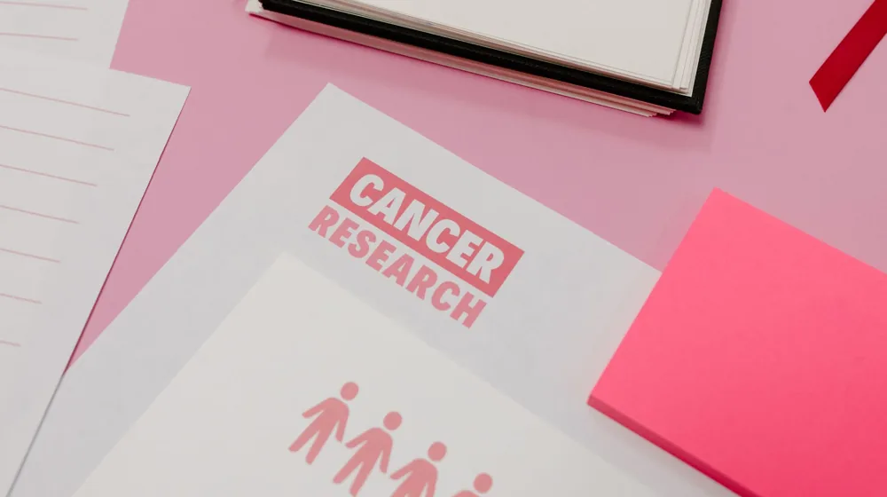

암보험, 이것 놓치면 억대 손해? 가입 전 필수 체크리스트
사진: Leeloo The First / Pexels (무료 이미지, 출처 표기)
암보험, 이것 놓치면 억대 손해? 가입 전 필수 체크리스트

사랑하는 가족의 미래를 위해 암보험 가입을 고민하고 계신가요? 하지만 복잡한 보험 용어와 수많은 상품 앞에서 어떤 것을 선택해야 할지 막막하게 느껴질 수 있습니다. 잘못된 선택은 예상치 못한 손실로 이어질 수 있으므로, 가입 전 반드시 알아야 할 핵심 주의사항과 유의사항을 꼼꼼하게 확인해야 합니다.
이 글에서는 암보험 가입 시 놓치기 쉬운 중요한 쟁점들을 정리하고, 현명한 결정을 내리는 데 도움이 되는 실질적인 정보를 제공합니다. 면책기간부터 보장 범위, 갱신 여부까지, 지금부터 함께 살펴보겠습니다.
면책기간과 감액기간, 왜 중요할까?
암보험 가입을 결정했다면, 가장 먼저 확인해야 할 것이 바로 면책기간과 감액기간입니다. 이 두 가지는 보험금을 받을 수 있는 시점과 금액에 직접적인 영향을 미치기 때문입니다.
- 면책기간: 보험 가입 후 일정 기간(대부분 90일) 동안 암 진단을 받아도 보험금이 지급되지 않는 기간을 말합니다. 이는 보험 가입 직전에 암 진단 사실을 알고 가입하는 것을 방지하기 위한 제도입니다. 예를 들어, 2026년 9월 25일에 암보험에 가입했다면, 2026년 12월 24일까지는 암 진단을 받아도 보장받기 어렵습니다.
- 감액기간: 면책기간이 끝난 후 1~2년 동안 보험금을 50%만 지급하는 기간을 말합니다. 이 기간 안에 암 진단을 받으면 가입 금액의 절반만 받을 수 있습니다. 감액기간이 끝나야 온전한 진단금을 받을 수 있으므로, 이 점을 반드시 확인해야 합니다.
따라서 암보험은 하루라도 빨리 가입하는 것이 유리하며, 면책기간과 감액기간을 정확히 인지하고 가입하는 것이 중요합니다. 상품별로 기간이 다를 수 있으니, 가입하려는 상품의 약관을 통해 정확한 내용을 확인하시길 권장합니다.
진단금 보장 범위, 무엇을 따져봐야 할까?
암보험의 핵심은 암 진단 시 지급되는 진단금입니다. 하지만 모든 암에 대해 동일한 금액이 지급되는 것은 아니며, 보장 범위에 따라 지급액이 달라질 수 있습니다. 크게 일반암, 유사암, 소액암으로 구분하여 확인해야 합니다.
- 일반암: 위암, 폐암, 간암, 대장암 등 대부분의 암이 여기에 해당하며, 가장 높은 진단금을 받습니다.
- 유사암: 갑상선암, 기타피부암, 경계성종양, 제자리암 등을 말합니다. 이들 암은 완치율이 높고 치료비 부담이 상대적으로 적어, 일반암 진단금의 10~20% 수준으로 보장되는 경우가 많습니다.
- 소액암: 유방암, 전립선암, 자궁암, 방광암 등 일부 암이 소액암으로 분류되어 일반암 진단금보다 적게 지급될 수 있습니다. (상품에 따라 유사암에 포함되거나 일반암으로 보장될 수도 있습니다.)
특히 여성에게 발병률이 높은 유방암, 자궁암, 남성에게 흔한 전립선암이 일반암으로 충분히 보장되는지 확인하는 것이 중요합니다. 상품에 따라 소액암으로 분류되어 보장 금액이 적을 수 있으니, 가입 전 약관의 '암의 분류표'를 반드시 확인하여 자신에게 필요한 보장이 포함되어 있는지 확인해야 합니다.
비갱신형 vs. 갱신형, 어떤 선택이 유리할까?
암보험은 보험료 납입 방식에 따라 크게 비갱신형과 갱신형으로 나뉩니다. 두 가지 방식의 장단점을 이해하고 자신의 상황에 맞는 것을 선택하는 것이 중요합니다.
일반적으로 젊고 경제활동 기간이 긴 시기에 가입한다면 비갱신형이 총 납입액 측면에서 유리할 수 있습니다. 반면, 초기 보험료 부담을 줄이고 싶다면 갱신형을 고려할 수 있으나, 나이가 들수록 보험료가 가파르게 오를 수 있다는 점을 유의해야 합니다. 2026년 9월 기준으로도 여전히 많은 보험사에서 다양한 갱신 및 비갱신형 상품을 제공하고 있으니, 여러 상품을 비교하는 것이 좋습니다.
보장 내용과 특약, 나에게 꼭 필요한 것은?
기본적인 암 진단금 외에도 암보험은 다양한 특약을 통해 보장 범위를 넓힐 수 있습니다. 하지만 불필요한 특약은 보험료 부담만 가중시키므로, 자신에게 꼭 필요한 보장을 선택하는 것이 중요합니다.
- 수술비, 입원비 특약: 암 치료 과정에서 발생하는 수술비와 입원비를 보장합니다. 반복 지급형 특약도 있어, 재발 시에도 도움이 될 수 있습니다.
- 항암치료비 특약: 방사선 치료, 약물 항암 치료 등 고액의 항암 치료 비용을 보장합니다. 최근 개발되는 면역항암제, 표적항암제 등 신약 치료 비용은 매우 높아 이 특약의 중요성이 커지고 있습니다.
- 요양병원 입원일당, 통원비 특약: 암 치료 후 회복 과정에서 필요한 요양병원 입원 비용이나 통원 치료비를 보장합니다.
기존에 가입한 다른 보험(실손의료보험, 종신보험 내 특약 등)에서 이미 보장받고 있는 내용이 없는지 확인하고, 중복되지 않으면서 필요한 특약만을 추가하는 것이 합리적입니다. 금융감독원 자료에 따르면, 과도한 특약 가입은 보험료 부담의 주요 원인이 될 수 있습니다.
가입 전 확인 필수! 체크리스트
암보험 가입은 한 번 결정하면 장기간 유지해야 하는 중요한 계약입니다. 앞서 설명드린 내용들을 바탕으로, 최종 가입 전에 다음 체크리스트를 활용하여 꼼꼼하게 확인하세요.
- 면책기간 및 감액기간 확인: 가입하려는 상품의 정확한 면책기간(대부분 90일)과 감액기간(1~2년)을 숙지하고 있는지?
- 진단금 보장 범위 확인: 유사암, 소액암의 분류와 보장 금액이 내가 생각하는 수준인지? 특히 발병률 높은 암(유방암, 전립선암 등)이 일반암으로 충분히 보장되는지?
- 갱신형 vs. 비갱신형 선택: 나의 경제 상황과 장기적인 계획에 맞는 유형을 선택했는지?
- 필수 특약만 가입: 불필요한 특약은 제외하고, 꼭 필요한 수술비, 항암치료비 등만 추가했는지?
- 고지 의무 준수: 과거 병력이나 현재 건강 상태를 정확하게 알렸는지? (고의 누락 시 보험금 지급 거절 사유가 될 수 있습니다.)
- 보험료 납입 여력: 장기간 보험료를 꾸준히 납입할 수 있는 수준인지?
- 보험사 및 상품 비교: 한 보험사나 상품에만 국한하지 않고, 여러 회사의 상품을 비교해 보았는지?
암보험은 예상치 못한 상황에 대비하여 경제적인 부담을 덜어주는 중요한 보장 수단입니다. 위에 제시된 체크리스트를 통해 신중하게 비교하고 선택하여, 자신에게 가장 적합한 암보험을 준비하시길 바랍니다. 정확한 사항은 해당 보험사의 공식 홈페이지나 보험 설계사와의 상담을 통해 다시 확인하시길 권장합니다.
🔗 이 글도 함께 보면 좋아요: 암보험, 놓치면 후회할 5가지 핵심! 가입 전 반드시 확인하세요
관련 추천 상품
이 포스팅은 쿠팡 파트너스 활동의 일환으로, 이에 따른 일정액의 수수료를 제공받습니다.